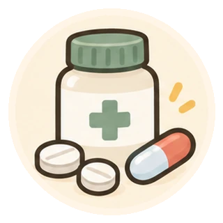

薬と暮らしの基本
市販薬を選ぶ・使う
買う前に確認したいこと、使うときの注意、受診する目安。
自分の健康を考え、相談や受診も選ぶ
セルフメディケーションは、自分の健康に関心を持ち、軽い不調への対処を自分で考え、行うことです。薬を買うことだけでなく、休養などの工夫や、薬剤師への相談、必要な受診も合わせて考えましょう。
病院に行かず我慢することでも、処方薬を自分でやめることでもありません。困ったときに専門家と相談しながら、無理のない方法を選びます。
市販薬のことを、もう少し詳しく
市販薬も、使う人に合うものを選びましょう
薬局やドラッグストアなどで買える市販薬も、使える年齢や、注意が必要な病気・飲み合わせがあります。「前に効いた」「家族が使っている」だけで選ばず、使う人の症状と説明書を確認しましょう。
処方薬と似た名前や同じ成分でも、量や使い方が違うことがあります。処方薬の代わりに自己判断で使わないでください。
買う前に、症状と使っているものを伝える
迷ったときは薬剤師や登録販売者に、次のことを伝えてください。どんなことに困っているか、生活の中で何を楽にしたいかも相談できます。
- 誰が使うか、年齢、症状がいつから・どのくらい続いているか
- 治療中の病気、妊娠・授乳の有無、薬などで具合が悪くなった経験
- 処方薬・ほかの市販薬・サプリメントの名前と使用状況
市販薬を買うときも、お薬手帳を見せましょう。買った後は商品名・量・使い始めた日を記録し、使い終わったらそのことも残すと確認に役立ちます。商品の箱・成分表示の写真も相談の手がかりになります。薬の種類によって、対応できる専門家が異なります。
商品名だけでなく、成分の重複も確認する
かぜ薬と痛み止めなど、違う商品に同じ成分が含まれることがあります。重ねて使う前に、箱や説明書を薬剤師に見せて確認しましょう。
説明書の「してはいけないこと」「相談すること」と、用法・用量、対象年齢を確認してください。効かないからと量や回数を増やしたり、大人用を自己流で減らして子どもに使ったりしないでください。
改善しないときは、買い足す前に相談する
使い続けてよい期間は薬によって違います。説明書にある使用期間や受診の目安を確認し、改善しない、繰り返す、悪化するときは医療機関に相談してください。
使用後に発疹など気になる変化が出たら、説明書に従って使用を中止し、薬剤師や医療機関へ相談しましょう。
息苦しい、意識がおかしいなど、生命に危険がある場合は119番を優先してください。
相談先は、困っている状況に合わせて
- 買う前の相談：症状や持病、薬の組合せ、選び方に迷ったら薬剤師・登録販売者へ。
- 早めの受診：説明書にある期間使っても改善しない、繰り返す、悪化する場合は医療機関へ。症状によっては初めから診察が必要です。
- 119番：呼吸や意識の異常など、生命に危険がある場合は救急要請を優先してください。
迷ったときは、症状を伝えて対応を相談しましょう。全員に共通する「何日なら安全」という日数はありません。
参考資料
- PMDA｜市販のくすりを使用する場合の注意
- PMDA｜医師が処方するくすりと市販のくすりの違い
- PMDA｜一般用医薬品・要指導医薬品 情報検索
- 厚生労働省｜要指導医薬品及び一般用医薬品の使用上の注意記載要領
作成日・資料の最終確認日：
公開前の確認用です。医療者による最終確認は完了していません。個別の製品については、説明書と医師・薬剤師などの指示を確認してください。